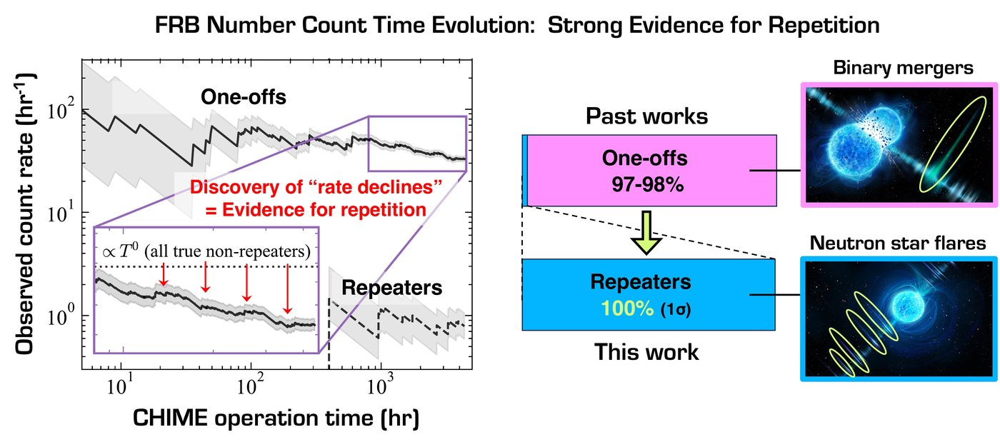

Populations
Do all FRBs repeat?
Every new source looks like a one-off until a second burst is seen. I used the time evolution of the CHIME survey to show that the one-off detection rate declines with time. Up to 100% (1σ) and at least 50% (2σ) of FRB sources are consistent with being repeaters.
I am now modeling the second CHIME/FRB catalog (about 3,000 sources) with the full selection function, to measure repetition rates and how long sources stay active.
Yamasaki et al. 2024, MNRAS 527, 11158 · TCUS Outstanding Research Award 2024 · Press release ↗
